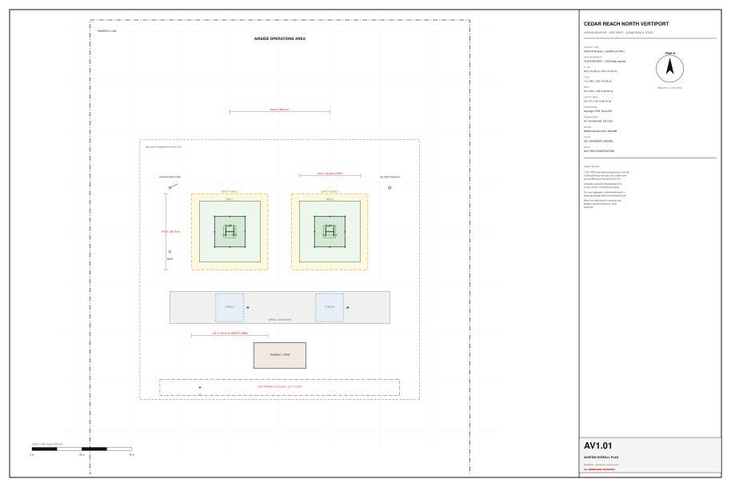
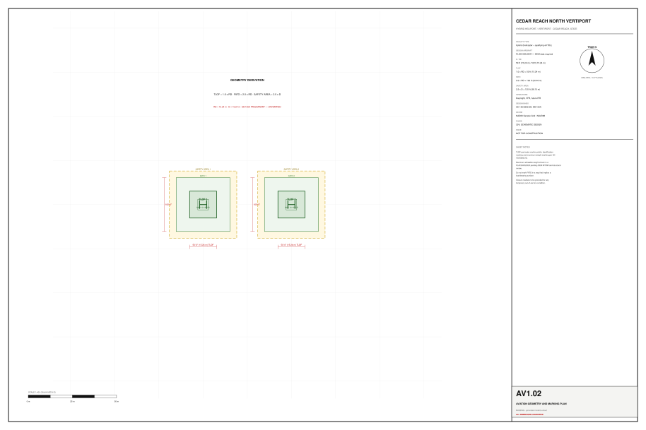
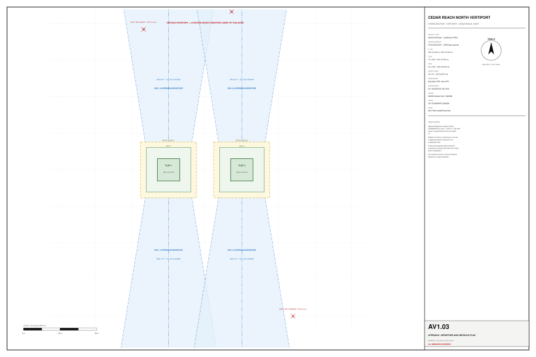
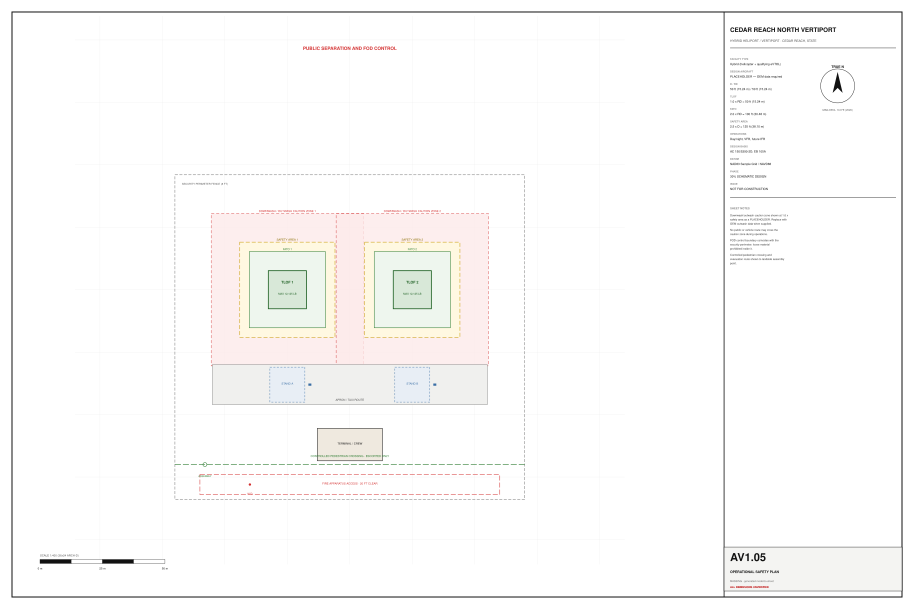
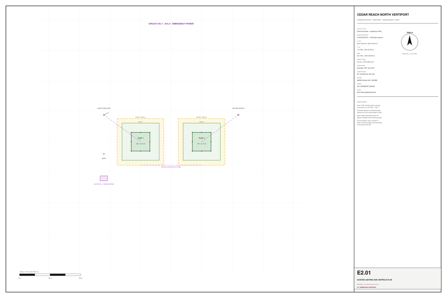

Library / Aviation
A hybrid heliport / vertiport at a 30% schematic level. A small model carrying very dense delivery data — which is the right shape for a 30% package, and a useful counterweight to the generated samples.
IfcSpace, with
design-basis parameters in Pset_Vertiport* — so the geometry that matters in
aviation is queryable rather than drawn




This package was authored separately and contributed to the library. It arrived named for a
real airport, in a real city, in an archive named for a real eVTOL manufacturer. Everything here
is dedicated to the public domain and carries a hard rule that no sample names a real place or
party, so the identity was replaced by tools/rebrand_vertiport.py.
| Was | Is |
|---|---|
| A real airport name | Cedar Reach North Vertiport |
| A real city and state | Cedar Reach, State |
| A real aircraft manufacturer | Sample Aircraft |
| A real state plane coordinate zone | NAD83 Sample Grid |
Nothing else changed. The regulatory references, geometry formulas, design basis,
registers, budget, schedule and sheets are exactly as contributed. The rebrand is recorded inside
the container under manifest.rebranded.
Two things were added, because the container lacked them: a
geometry/model.frag converted from the source IFC it already contained (without it
the sample opens to an empty canvas), and a rebuilt manifest inventory — substituting text
changed byte lengths, so the entry sizes it shipped no longer described its own contents.
Read the report before citing anything. It opens by stating what the
package is not: not sealed engineering, no number validated by a licensed professional or any
authority having jurisdiction, every dimension flagged UNVERIFIED deliberately. A
30% package that does not say it is 30% is how a schematic sketch ends up quoted as a
clearance.